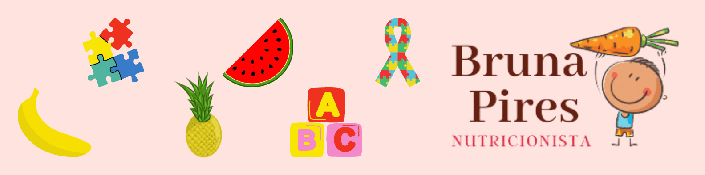
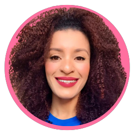

Quem Sou
Formação Acadêmica
Formação Complementar
Rede Social
Contato
Quem sou

Olá, me chamo Bruna Pires.
Nutricionista Materno Infantil.
Formação Acadêmica
Nutricionista
Especialização em Nutrição Materna Infantil (Instituto Nutri Learn - 2021)
Pós Graduanda em Nutrição Clínica e Fitoterapia (Instituto Nutri Learn – em andamento)
Pós Graduanda em Intervenção ABA no Transtorno do Espectro Autista (Faculdade Metropolitana)
Cursando Libras ( CAEES – NEYDE NAHID MANSUR)
Formação Complementar
Terapia Alimentar com abordagem no ABA para autista – Instituto Neuro (2022)
Transtorno do Espectro Autista – Intervenção no Ambiente Educacional e Doméstico – Oficina do Autismo (2022)
Conduta Nutricional no Tratamento de Desordens Neurológicas - Instituto Nutri Learn (2022)
Diabetes, Intervenção Nutricional - Instituto Nutri Learn (2021)
Cuidados à saúde das mulheres. Foco na atenção primária à saúde – UNA-SUS (2021)
Acompanhamento Nutricional no Autismo - Instituto Nutri Learn (2021)
Atendimento à gestante de alto risco - Instituto Nutri Learn (2021)
Atendimento Nutricional em Pediatria (de 2 a 10 anos) - Instituto Nutri Learn (2021)
Acompanhamento Nutricional na Alimentação Vegetariana -Instituto Nutri Learn (2021)
Utilização da Fitoterapia na Prática - Instituto Nutri Learn (2021)
Congresso em Saúde Materno Infantil - Instituto Nutri Learn (2020)
Utilização de Probióticos na Prática Clínica - Instituto Nutri Learn (2020)
Introdução Alimentar e Amamentação, crianças até 2 anos - Instituto Nutri Learn (2020)
Curso de aperfeiçoamento: Doenças Inflamatórias Intestinais - Instituto Nutri Learn (2019)
Curso de aperfeiçoamento: Avaliação Antropométrica -Instituto Nutri Learn (2019)
Curso de extensão: Interpretação de exames laboratoriais na prática clínica do Nutricionista Instituto Mara Gabri (2019)
XI Workshop se Alimentos Funcionais -UFF (2019)
Curso de Extensão: Nutracêuticos, Eu Prescrevo: Modulação Intestinal, Hormônios e Equilíbrio dos Sistemas Fisiológicos - Instituto Luciana (2018)
Curso de Extensão: Nutrição em Pediatria, no consultório e na Escola - Instituto Mara Gabri (2018)
Informática
Domínio em gerenciamento de e-mails, conhecimento e domínio em redes sociais e programas da Microsoft Office (Word, Excel e PowerPoint).
Conhecimento no sistema MV SOUL.
Idiomas
Inglês - Básico
Espanhol - Intermediário